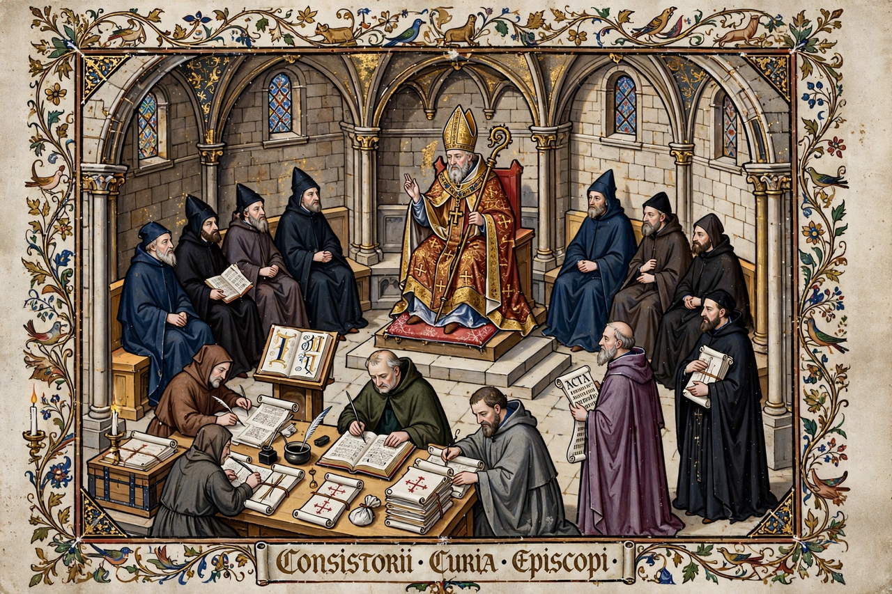

Wikipedia > Ecclesiastical court
Ecclesiastical court

An ecclesiastical court, also called a court Christian, is a court with jurisdiction over spiritual and ecclesiastical matters, applying canon law. Such courts were a central institution of medieval and early modern Europe, and various forms of church tribunal survive today, notably in the Roman Catholic Church and the Church of England.
Medieval jurisdiction
At their height in the twelfth and thirteenth centuries, church courts claimed jurisdiction over clergy (the "benefit of clergy"), marriage and sexual morality, wills and probate, oaths and perjury, defamation, tithes, usury, heresy and the discipline of laypeople for moral offences. Their law was the canon law systematised by Gratian and his successors, and their procedure — written, inquisitorial, without juries — contrasted with the common law and influenced its development. The hierarchy of courts ran from archdeacons' and bishops' consistory courts up to provincial courts such as the Arches Court in Canterbury, with appeals in principle to Rome.
Sanctions
Ecclesiastical courts could not impose capital punishment, but they wielded penance, fines, suspension from office, imprisonment in some cases, and the spiritual censures of interdict and excommunication, which carried severe social and legal disabilities. Heresy was the great exception: convicted heretics could be "relaxed to the secular arm" for execution by the state.
Decline and survival
The Reformation and the growth of state power stripped church courts of much of their business: in England, probate and matrimonial jurisdiction passed to civil courts in 1857, and defamation in 1855. Surviving English ecclesiastical courts — consistory courts of dioceses and the Court of Ecclesiastical Causes Reserved — now deal mainly with clergy discipline and the law of church buildings (the faculty jurisdiction). The Roman Catholic Church maintains diocesan tribunals, chiefly for marriage nullity cases, the Roman Rota as an appellate tribunal, and the Apostolic Penitentiary for matters of conscience.
See also: Gratian · Excommunication · Canon law · Benefit of clergy